All year · Two hours
Dawn walk to the light
Leave before sunrise with a guide and a flask of tea, along the cliff path to the old light at the tip of the headland. Back in time for breakfast.
Ask about it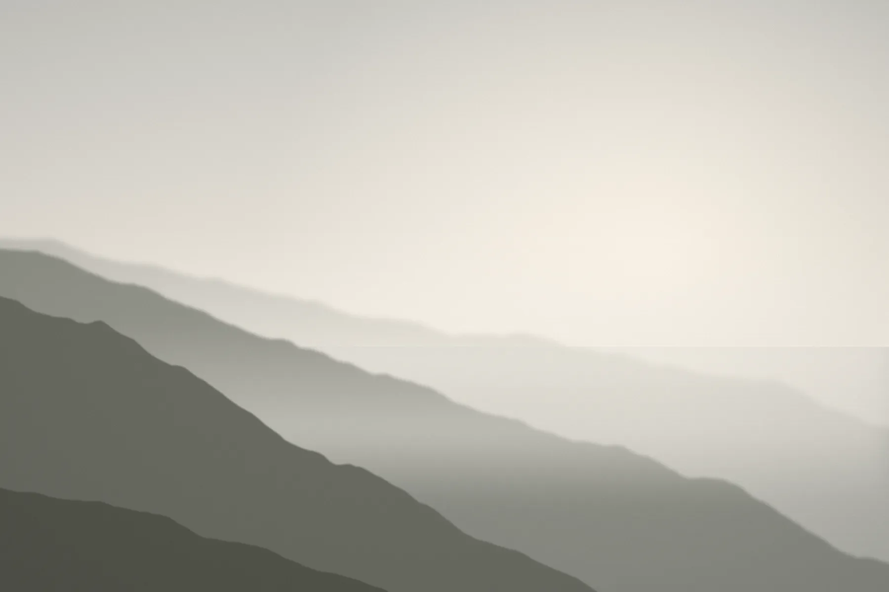
Halde Head at first light, late March.
Halde Head, on the north coast
Eleven pavilions, a bathhouse fed by a warm spring, one table for dinner and a path down to the cove.
Eleven pavilions · One headland
The pavilions stand apart among old cedars, each with a deep stone bath and a window that holds nothing but weather. Nothing here asks to be looked at except the view.
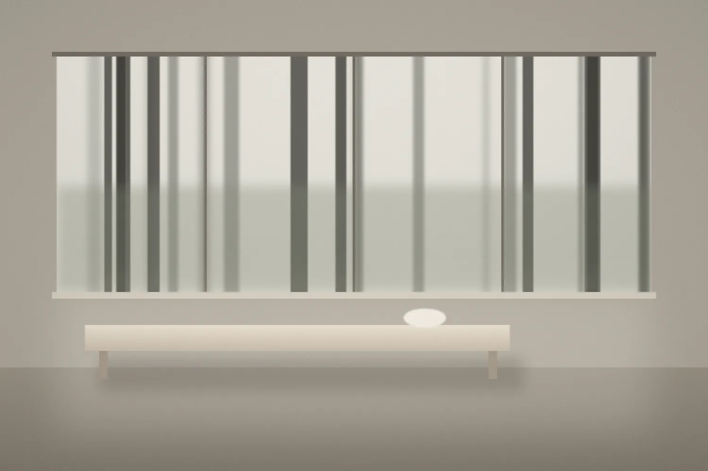
Stay
No two share a wall or a view. Floors of pale cedar, beds low to the ground, and windows that open fully, so the forest or the sea becomes part of the room.
The pavilionsWellness
A warm spring rises under the headland. We bring it into stone baths beneath a high window, with treatments that take their time.
Wellness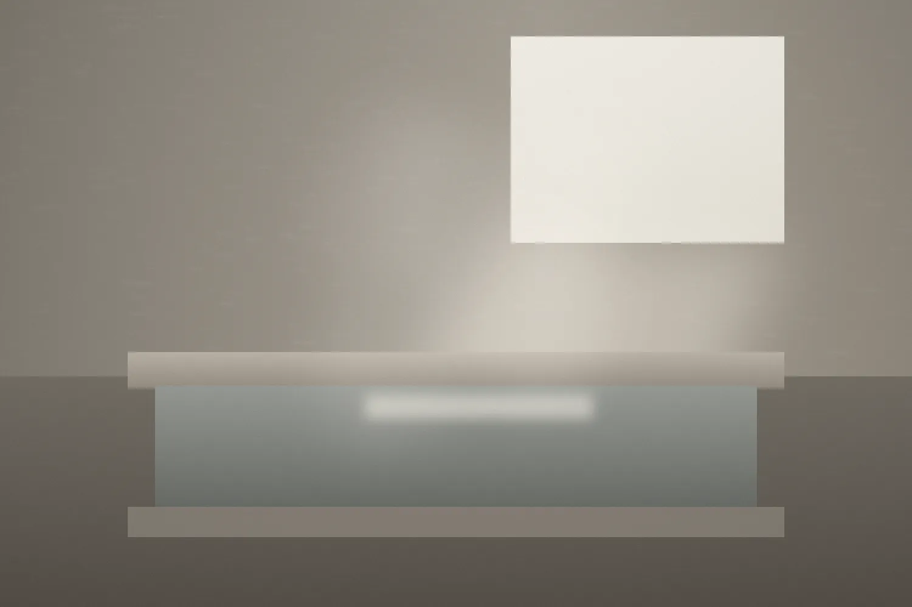
Pavilions
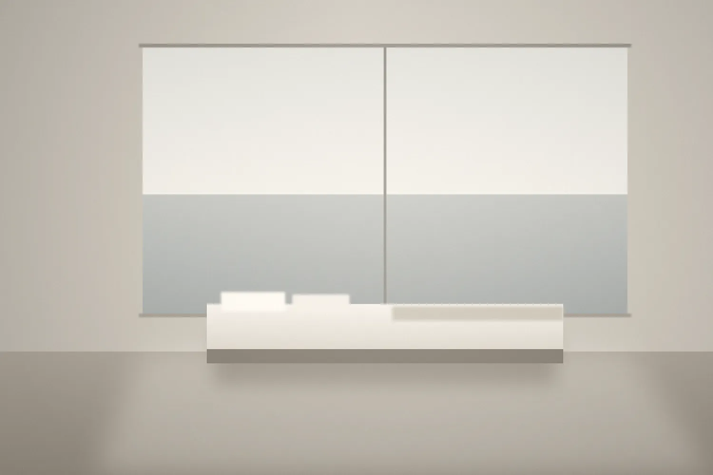
Sea · Sleeps 2
A wall of glass facing west and a stone bath on the terrace.
DiscoverForest · Sleeps 2
Raised among cedars, with a window seat for reading.
Discover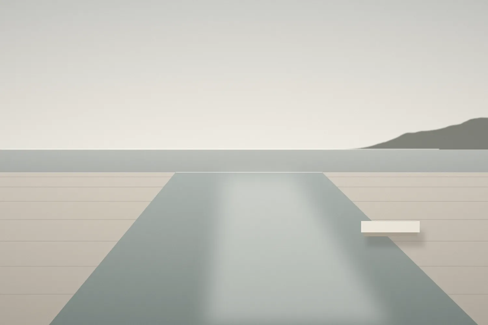
Sea · Sleeps 3
A plunge pool that runs out towards the horizon.
Discover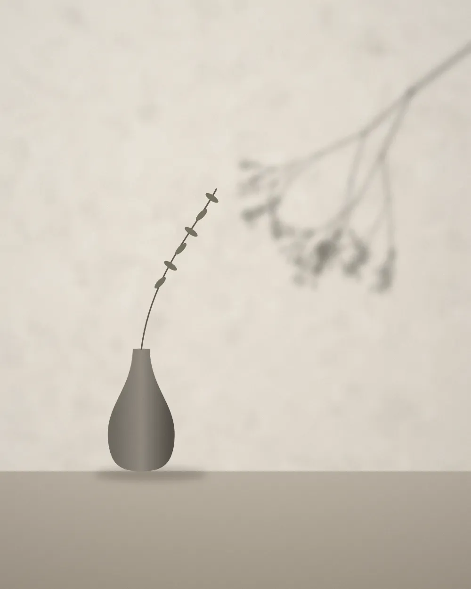
Garden · Sleeps 2
Two rooms around a walled courtyard of moss and stone.
Discover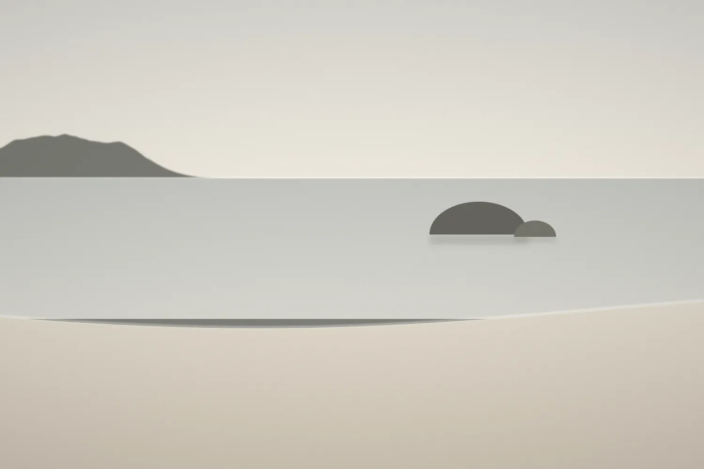
Sea · Sleeps 4
Two bedrooms and steps down to the water.
Discover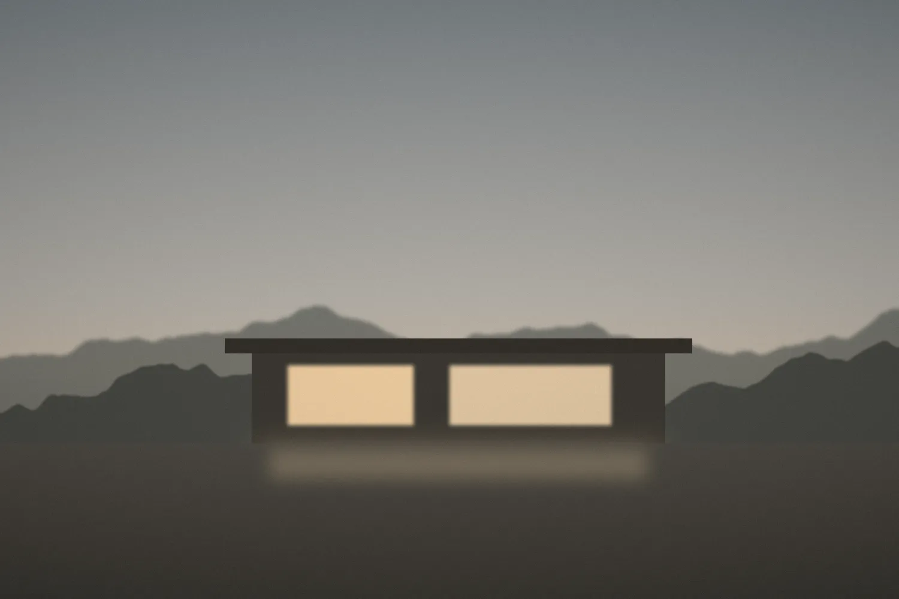
Forest · Sleeps 6
Three bedrooms under one roof in a clearing.
DiscoverThe long pool, looking west over Wren Cove.
We built less than we were allowed to, and planted more than we cut.
Experiences
Walks at first light, tide pools with the kitchen, a boat to the outer rocks when the sea allows.
All experiences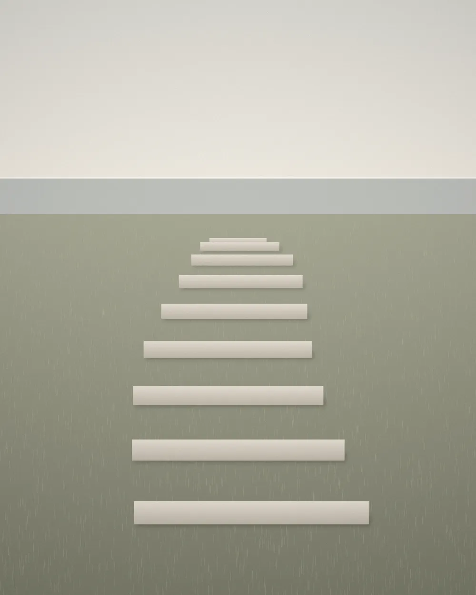
All year · Two hours
Along the cliff path to the old light, back for breakfast.
Discover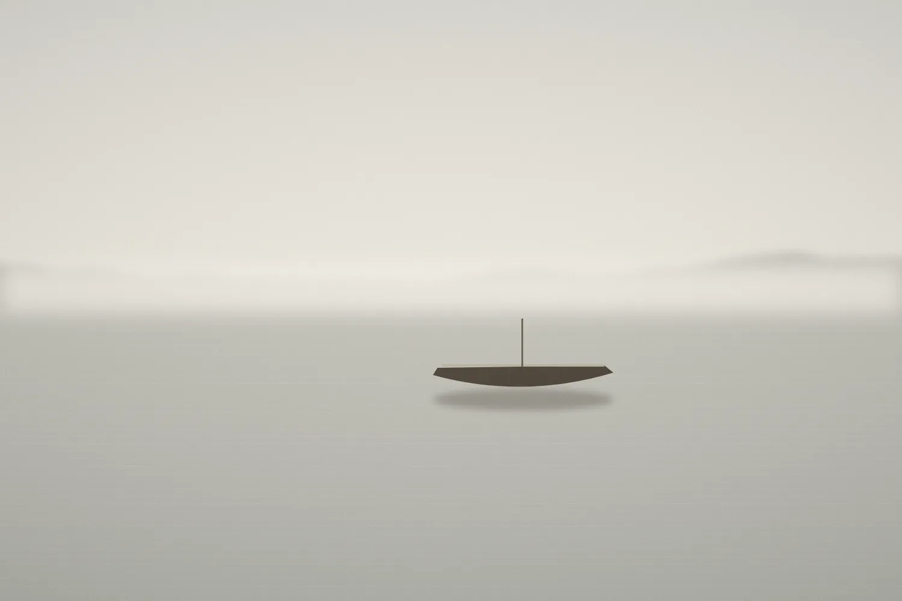
Summer · Half a day
Seals, clear water and a swim when the sea is calm.
DiscoverJournal
Stay
Each pavilion stands alone, with its own bath and terrace and no shared walls. Breakfast is included; dinner is at the Long Table.
6 pavilions
No pavilion matches. Try another outlook or fewer guests.
Rates
Rates are shared on enquiry and include breakfast, the bathhouse and transfers from Ardley.
Sea · Sleeps 2
A single room with a wall of glass facing west over Wren Cove. The bed is low, the floor is pale cedar, and the stone bath waits on the terrace, open to the weather.
There are four Sea Pavilions along the western cliff, far enough apart that you hear only the water. Each has its own path down through the grass.
In the pavilion
Also on the cliff
Experiences
A few things to do, each led by someone who lives here. Tell us what appeals when you enquire and we will plan the days around the weather.
6 experiences
All year · Two hours
Leave before sunrise with a guide and a flask of tea, along the cliff path to the old light at the tip of the headland. Back in time for breakfast.
Ask about itSpring and summer · At low tide
Walk the rocks of Wren Cove with one of our cooks at low tide, then cook what you gathered over a fire on the sand.
Ask about itSummer · Half a day
A wooden boat and a skipper from the village, out to the seal rocks and a swim in the clearest water on the coast, when the sea allows.
Ask about itAutumn and winter · Ninety minutes
A long soak in the warm spring, a scrub of salt and cedar oil, and an hour of rest by the fire in the bathhouse.
WellnessAutumn to spring · An afternoon
An afternoon with a papermaker in Ardley, pulling sheets from a vat of fibre and writing on them with ink ground on stone.
Ask about itWinter · After dinner
Blankets, a telescope and warm spiced cider on the cliff lawn, on clear nights without a moon.
Ask about itNothing planned for that season yet.
Dining
Breakfast and tea at the Tea House, dinner at the Long Table. Tell us what you do not eat and we will cook around it.
The Long Table, a little before half past seven.
Dinner · One sitting at 7.30 pm
One table under the eaves for twenty-four guests, and a menu written each afternoon from what the garden, the cove and the hill farms bring in.
Hill green tea, picked in May.
Breakfast 7 to 11 am · Tea until dusk
A small room of pale wood beside the walled garden, with eight tables and a long window. Breakfast can also come to your pavilion in a lacquered box.
Wellness
A warm spring rises beneath the headland. Its water fills two stone baths and a cold pool, open to guests from seven in the morning until ten at night.
Treatments
By appointment. Ask when you enquire, or at the bathhouse door.
A scrub of sea salt and cedar oil, a rinse in the spring and a long rest.
60 min
Slow, unhurried work from head to foot, with oil pressed from hill camellias.
90 min
Stones warmed in the spring, then a plunge in the cold pool and tea by the fire.
75 min
Steam, clay from the riverbank and a mask of whatever the garden has that week.
60 min
A foot bath, a short massage and a warm drink, brought to your pavilion at night.
45 min
Every day, without booking
Forty minutes of slow stretching on the cliff lawn at seven, or in the bathhouse when it rains.
Ten quiet minutes as the light goes, led by the bathhouse team.
The cove at any hour for the brave, the cold pool for everyone else.
Journal
Seasons, tables and the people who make things for the house.
5 notes
Place · 14 October
Twelve months of watching the water come and go below the pavilions.
ReadTable · 2 October
What the kitchen puts away in autumn, and how.
ReadCraft · 18 September
A morning at the kiln on the far side of the hill.
ReadPlace · 30 August
The cliff path, step by step, in the half hour before dawn.
ReadCraft · 9 August
Why every letter we send is written on paper made in Ardley.
ReadNo notes of that kind yet.
Place · 14 October
Twelve months of watching the water come and go below the pavilions, and what it taught us about time.
The first winter we spent on the headland, we kept a notebook by the window of the Cove House and wrote down the tide twice a day. It began as a practical thing: the path down to the sand floods at the top of the spring tides, and guests needed to know when they could walk to the rocks.
By March the notebook had become something else. We were writing down the colour of the water, the birds on the outer rocks, which way the kelp lay. The tide table had turned into a diary of the cove.
The lowest tides of the year come with the spring equinox, early in the morning. The rocks of Wren Cove stand clear for an hour, and the pools between them fill with things you never see otherwise: small crabs, the pale fronds of sea lettuce, a starfish the size of a hand.
The tide table had turned into a diary of the cove.
The kitchen goes down with baskets on those mornings. What comes back is cooked that night over the fire, and written on the menu card in pencil.
The water keeps a slower clock than we do. After a year of watching it, we moved breakfast later on the days of the low spring tides, so that guests could walk the cove first. It is the only rule on the headland that the sea wrote for us.
Enquire
Tell us when you would like to come and who is coming. A member of the house replies within a day with availability, rates and a few suggestions for your days.
Enquiry received
We have your enquiry for , from to . A member of the house will write to within a day.
Getting here
Halde Head is at the end of the coast road, twenty-five minutes from the station at Ardley. We meet every train.
To Ardley, then twenty-five minutes along the coast road. Our car meets every train.
Follow the coast road west from Ardley to its end. Park at the gate; we will take your bags.
The nearest airport is ninety minutes away. We can arrange a car to meet your flight.
Write to us
About the house
Veyra was built on the footprint of an old forester’s camp, with eleven pavilions where the huts once stood. We cut a path, not a road, and kept every cedar we could.
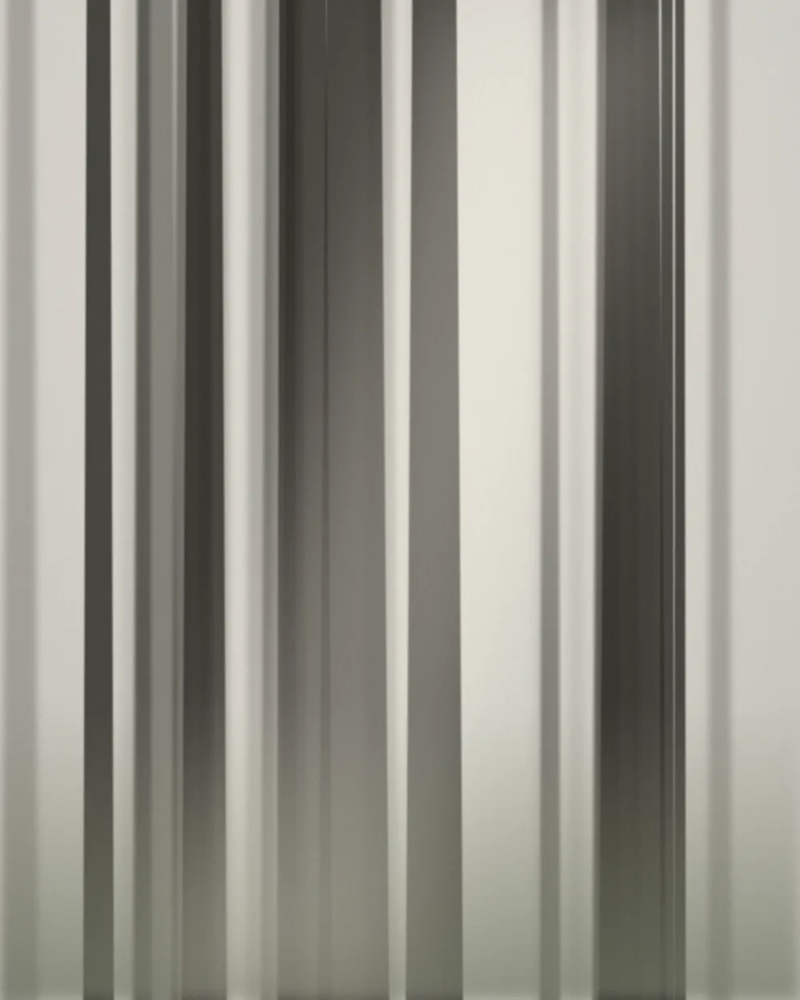
The forest first
The pavilions sit on posts so the roots run underneath them. Roofs are planted with the same moss as the forest floor, so from the cove the headland looks almost as it did.
Made nearby
Linen from the weaver in Ardley, bowls from a kiln over the hill, paper from the village mill. We buy from people we can visit.
What we keep
And no more. The headland is small, and so is the house.
Dinner is a single sitting, so the kitchen cooks for the room it can see.
Signal in the Tea House, books and records everywhere else.
Questions
Staying
Pavilions are ready from 3 pm, and you are welcome to stay until noon on your last day. Earlier and later are often possible; ask us.
Yes, in the Cove House and the Long House, which have a second bedroom. The other pavilions are made for two.
Two of the Forest Pavilions welcome one well-behaved dog. Please tell us when you enquire.
Dining
Tell us when you enquire and again on arrival. The kitchen writes the menu each afternoon and cooks around what you cannot eat.
On some evenings in winter there are a few seats at the Long Table. Write to us to ask.
Wellness
Every day from 7 am to 10 pm, for guests only. Treatments are by appointment.
Getting here
Yes. Our car meets every train at Ardley; tell us which one you are on.
At the gate at the end of the coast road. Cars stay there; the pavilions are reached on foot.
Last updated 1 November 2026
We keep only what we need to look after your stay, and we never sell it.
Your name, contact details, the dates and details of your stay, and anything you tell us about dietary needs or occasions.
To answer your enquiry, prepare your pavilion and meals, and, if you ask, send a letter with each change of season.
We keep booking records for as long as the law requires and delete enquiries that did not become stays after twelve months.
Write to hello@veyra.example to see, correct or delete what we hold about you.
Last updated 1 November 2026
The short version: tell us early if your plans change, and treat the headland gently.
A stay is confirmed when we write to confirm it and the deposit is received.
The terms that apply are set out in your confirmation. Please read them before you travel.
Paths are uneven and the cliffs are unfenced in places. Keep to the marked paths after dark and carry the lantern in your pavilion.
Not found
The page may have moved, or the link may be old.